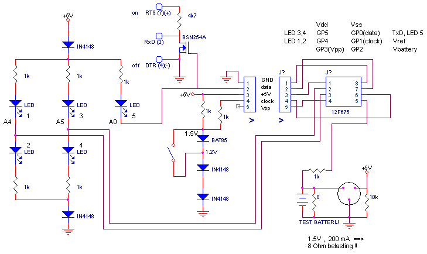

2003
Battery Tester
|
PIC Battery Tester
- PIC 12F675 programmed in JAL (sources)
- The battery under test is used as the power source
- Both 1.5V types and 1.2V types can be tested
- Measures downto 0.6 Volt
- Discharging can be logged through the RS232 port
october 2003, Robbert Mientki & Stef Mientki |
|
|
NiCd 1,2V |
Alkaline 1.5V |
|
 |
- |
> 0.6 |
|
> 0.6 |
> 0.75 |
|
> 0.8 |
> 0.95 |
|
> 0.95 |
> 1.15 |
|
> 1.1 |
> 1.35 |
|
> 1.2 |
> 1.5 |
|
|
Our old battery tester, which was produced around 1950, by one of the few Dutch battery firms "De Witte Kat". Batteries form this brand are still sold in the Netherlands, but are now produced by Varta.
If you've a little experience, it's remarkable how accurate you can measure the quality of a battery with this simple device. The bulb is the standard bulb that was used in all Dutch bikes until about 1990 (6V / 3W), coated with a red transparent paint. |
The new battery tester (2003), build round a PIC12F675 |
The schematic is quiet straight forward.
The most difficult part is the step-up-converter, fortunatly we had one lying around (the round circle with the 3 connections at the right-bottom part of the circuit. At the bottom of this page there's are a few circuits of a step-up converters with conventional components.
Another problem we had was a correct startup of the PIC, specially at low battery voltages (we go to 0.6 Volt). Trying to invoke the watchdog even made a worse. The solution with the 3 resistors (8 Ohm, 1k, 10k) around the step-up converter works almost always (remember that each PIC pin (except programming) has a protection diode to Vdd). To make it even more reliable we added a hard reset in the software (goto 0x00), each 10 seconds.
The 5-pole connector makes it possible to re-program the PIC, by disconnecting the largest part of the circuit and connecting a programmer to the PIC.
GP4 and GP5 each control 2 LEDS.
When the pin is programmed as an input, none of the LEDs will light.
Making the pin a low output, will light the upper LED
Making the pin a high output, will light up the lower LED
GP0, drives A0 and the RS232 output. Because RS232 transmission is done at 115_200 Baud, it won't influence the LED. The other way around, if the LED A0 is active, the RS232 transmission will consist of 2 bytes, the measured voltage, followed by a zero byte, so that's very easy to ignore.
Why not used GP3 ? Simply because it can only be used as a digital input pin.
The AD-conversion is done, against a reference voltage of 1.2 or 1,.5 Volt, set by the switch for NiCd / Alkaline batteries.
The FET inverts and level-shift the RS232 signal and is completly powered by the RS232 line itself. Because no other devices draw power from the RS232-lines, this is completly legal and should work on all RS232 ports. The relative high baudrate of 115_200 should not be a problem as long as the programmer conserves the calibration words of the 12F675.

Feed a LED from an empty Battery
We've build this circuit and simulated it in SwitcherCad, circuit can be found here.
The practical circuit performs as the simulation predicts, so it's easy to optimize. The internal resistance of the "empty" battery is quiet varying property, measured over different batteries.
From http://wwwbelza.cz